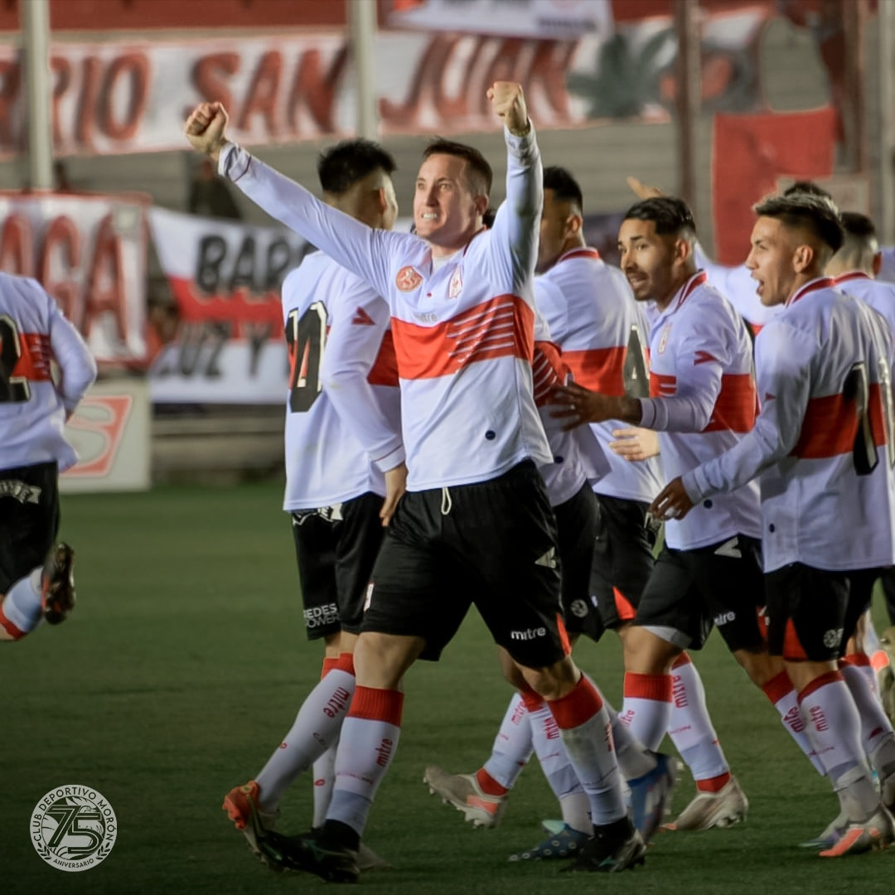

PRIMERA NACIONAL 2022
Torneo Malvinas Argentinas
Deportivo Morón 1 - Temperley 1
EL RESUMEN DEL EMPATE CONTRA EL GASOLERO
Un nuevo empate sumó el Gallo en la noche del sábado, el cuarto de manera consecutiva y el 13° del torneo.Un horrible primer tiempo del Gallo, con muchas imprecisiones y actuaciones muy bajas, en donde Temperley se puso arriba temprano y pudo aumentar la ventaja antes de finalizar.
Con los cambios en el entretiempo, los ingresos de Bayk y Coronel, cambió totalmente la imagen y enseguida llegó la igualdad con la cabeza de Leonardo Ramos. Segundo gol con la camiseta del Gallo para el delantero.
Varias chances tuvo Morón para llevarse los tres puntos, pero la mala puntería y el uno visitante hicieron que finalice otra vez en empate.
Partido muy friccionado y discutido, once amonestados en total y nievamente una dudosa jugada sobre el final que pareció penal para Morón, por una mano dentro del área.
La fecha próxima quedamos libres, y aun no podemos despegarnos de la zona baja de la tabla, sumando tantos empates en el año.
En la fecha 25 Morón visita nuevamente Puerto Madryn, esta vez para enfrentar a Deportivo Madryn.
El Torneo
Tabla de Posiciones y Fixture

Estadísticas de la Temporada 2022.
El Plantel
Los jugadores que defienden la camiseta del Gallo en esta temporada. Presencias, goles y todas las estadísticas.
Síntesis de Partidos

Formaciones y detalle de cada uno de los partidos del Torneo.